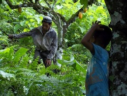
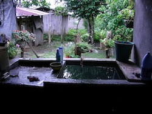

|
Colombian Army actions in the peace community of San José de Apartadó have put residents and FOR observers in acute danger, and are in violation of the recent Colombian Constitutional Court ruling regarding the security of peace community members. On Tuesday, April 9, presumed FARC combatants fired at an encampment that the Colombian Army established on a peace community farm. The Army returned fire, and in doing so shot directly into the settlement of La Unión. At that moment, an FOR team member was on the far side of La Unión, in the direct line of fire from the Army. On April 16, community residents encountered hooded armed troops, who identified themselves as members of the 24th Mobile Brigade and threatened local men. Please ask US Embassy officials to contact Army officers responsible for these actions. Read more.
By Susana Pimiento
After eight years, the criminal investigation for the role of high military officials in the 2005 massacre in the San Jose Peace Community is finally getting some traction. The Colombian prosecutor finally ordered the interrogation of Generals Héctor Jaime Fandiño and Luis Alfonso Zapatafor their role as commanders of the Army's 17th Brigade at the time of the massacre and a military subsequent cover-up. Former armed forces chief General Carlos Ospina Ovalle, now teaching at the National Defense University in Washington, will also be questioned. Read more.
As Heads of State from Mexico, Central America and the United States prepare to meet for the Summit of the Central American Integration System (SICA) in Costa Rica on May 4 and 5, the Fellowship of Reconciliation collaborated with Just Associates, the Americas Program, the Guatemala Human Rights Commission-USA and the Latin America Working Group to present a letter that has been signed by more than 145 international, regional and local organizations from ten countries in the Americas."It is time to refocus regional dialogue and resource investment to address the root causes of violence, understanding that for many citizens and communities, drug trafficking is not the principal cause of insecurity," the groups said. Read more.
By Susana Pimiento
On April 19 and 20, more than 250 people gathered in Puerto Mayo, Peru, to discuss the US-sponsored plan to build an airport and military base in Pichari, Peru, 300 miles north of Cusco.The communities “rejected the construction of a military air base in the Otari Colonos territory (or in any other part of the country, as well as the involvement of US military personnel or contractors in Peru.” In their view, the aerial military project would have an adverse impact on the local population’s human and property rights and the region’s biological diversity. Read more. |